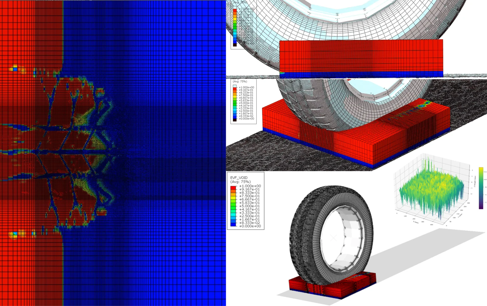

CCAT: Improving Traffic Safety Through Quantification of Road Network Hydroplaning Risks
Principal Investigators: Imad L. Al-Qadi,
Yanfeng Ouyang
Sponsor: Center for Connected and Automated Transportation (CCAT)
This study is sponsored by the Center for Connected and Automated Transportation (CCAT), the U.S. Department of Transportation Region 5 University Transportation Center led by the University of Michigan, with the University of Illinois Urbana-Champaign among its partner institutions. The project was awarded in 2025 and its official description can be accessed here.
The work is jointly carried out by the pavement mechanics group led by Professor Al-Qadi and the transportation systems group led by Professor Ouyang, bridging tire–pavement interaction modeling at the wheel-path scale with asset management decision-making at the network scale.
- Institution: University of Illinois Urbana-Champaign
- Award Year: 2025
- Research Focus: Safety, Mobility
- Status: Active
Project Abstract
The main objective of this study is to develop a computational framework to quantify tire–water–pavement interactions under wet surface conditions, assess their impacts on pavement friction, and suggest incorporating those impacts into an integrated asset management framework for pavement treatment prioritization and scheduling.
This new research effort would enable roadway agencies to improve roadway safety by optimizing roadway friction as part of an integrated asset management plan. It will serve as a valuable tool for roadway agencies, providing them with insights to implement strategies to reduce traffic crashes, congestion, as well as pavement deterioration.
The study will support CCAT's efforts to create safe and durable transportation systems.
Research Team
The project is carried out by two complementary research groups at the University of Illinois Urbana-Champaign:
- Principal Investigators: Imad L. Al-Qadi and Yanfeng Ouyang.
- Al-Qadi Research Group — Graduate Students:
- William Villamil
- Aditya Singh
- Johann J. Cardenas
- Ouyang Research Group:
- Caio Beojone — Post-Doctoral Researcher
- Hun Run — Graduate Student
Approach
Wet-weather crashes are governed by how much friction a tire can mobilize once a water film separates it from the pavement surface. Capturing that mechanism requires resolving the fluid, the deformable tire, and the textured pavement surface simultaneously. The computational framework under development couples a finite element tire model with a fluid domain over a measured pavement surface texture, so that the loss of contact area as water is displaced through the tread grooves can be tracked explicitly (see Figure 1). The resulting friction estimates are then mapped onto the road network to identify where hydroplaning risk is concentrated.

Anticipated Outcomes
The study is expected to deliver:
- A computational framework that quantifies tire–water–pavement interaction under wet surface conditions.
- An assessment of how those interactions degrade available pavement friction.
- A means of incorporating friction loss and hydroplaning risk into an integrated asset management framework.
- Guidance for prioritizing and scheduling pavement treatments so that friction is optimized across the network, not only at individual sections.
Potential Implementation
By treating surface friction as an asset to be managed rather than a property to be measured after the fact, roadway agencies would be able to target treatments where they buy the most safety benefit. The framework is intended to give agencies a defensible basis for reducing wet-weather crashes and the congestion that follows them, while accounting for the pavement deterioration that drives treatment timing in the first place.